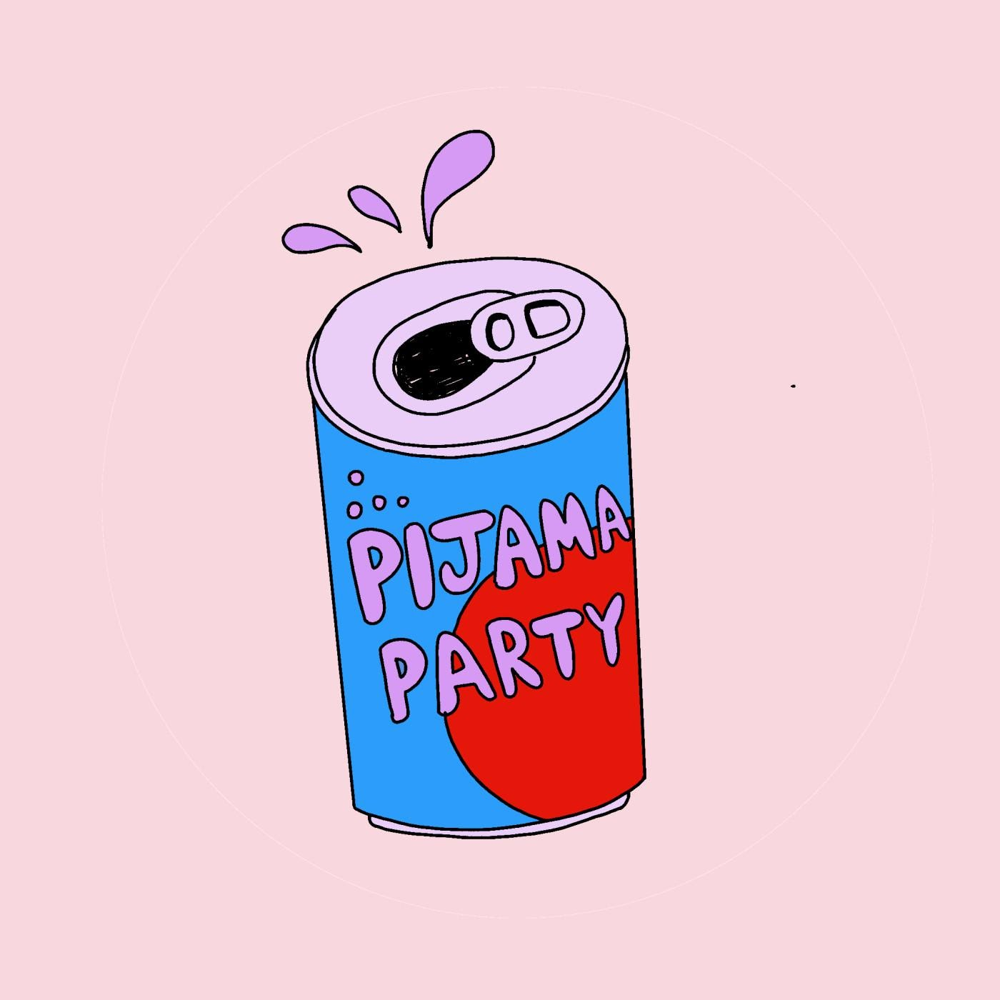

Radio
Malén Denis trabajó como productora en Metro 95.1 y más adelante frente al mic en Futurock.FM. Su especialidad es analizar hechos de la cultura mainstream -especialmente el cine Estadounidense- con una óptica feminista.
Especial de #LaNocheInesperada en Futurock "Cine y fuga"
En Segurola y Habana, por Futurock (2020)
Cliches Neoyorquinos - por Fito Mendoca y Malén Denis en #SegurolaYHabana
Al mudarse a Estados Unidos una de las cosas que fue inevitable abandonar fue la radio, por lo cual comenzó a conducir su propio podcast junto con Pepita Sándwich. En Pijama Party Malén y Pepa recorren la nostalgia de las películas clásicas -y no tanto- producidas en Hollywood repensando cómo somos representadas las mujeres, lesbianas y trans en las narrativas pop.
Link: https://podcasts.apple.com/ar/podcast/pijama-party/id1453344445